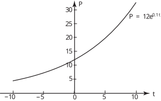

Long description: Block7_Fig6_1

Alt text: A graph showing the exponential function \(P = 12e^{0.01t}\) plotted on a coordinate plane with time \(t\) on the horizontal axis and population \(P\) on the vertical axis.
This description was generated by AI and has not been verified by a human. If you spot an error, please use the feedback link below.
- The graph displays the relationship between \(P\), the population, and \(t\), time, modeled by the equation \(P = 12e^{0.01t}\).
- The horizontal axis represents \(t\), ranging from \(-10\) to \(10\).
- The vertical axis represents \(P\), with marked intervals at \(5\), \(10\), \(15\), \(20\), \(25\), and \(30\).
- The curve is continuously increasing, indicating that \(P\) increases as \(t\) increases.
- At \(t = -10\), the value of \(P\) is slightly above \(5\).
- At \(t = 0\), the curve passes through the point \((0, 12)\).
- At \(t = 10\), the value of \(P\) is approaching \(30\).